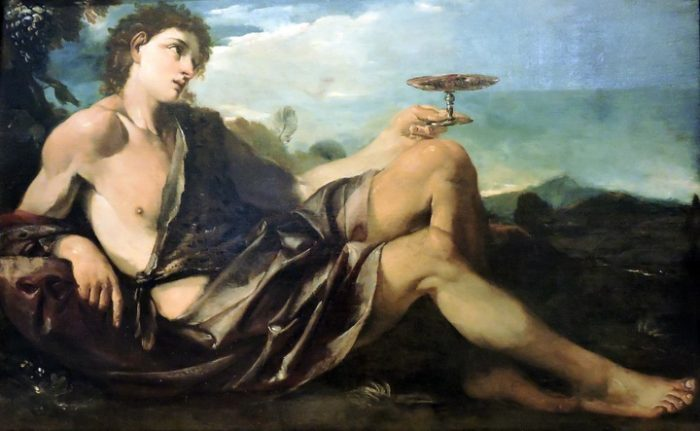
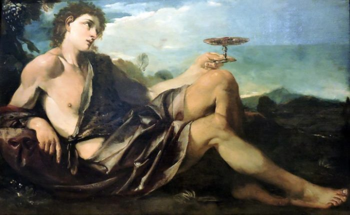
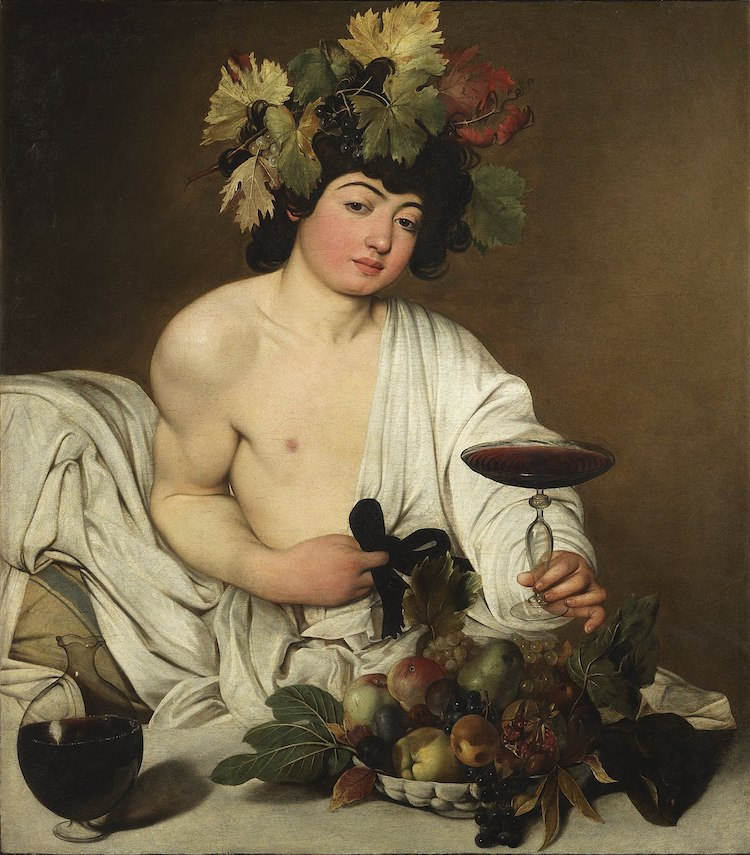

Dionisio
Introducción
Dionisio o Baco en la mitología Romana, es el famoso dios de las fiestas, del vino, de la vegetación y del éxtasis, hijo de Zeus y Sémele. Era un viajero que viajó por toda Grecia enseñando a la gente el arte de hacer vino y de disfrutarlo. Normalmente acompañado por sátiros y ménades.

 

Nacimiento
Dionisio fue concebido por Zeus y Sémele. Hera, celosa y vanidosa, descubrió la aventura de su marido cuando Sémele estaba encinta.
Con el aspecto de una, Hera se le apareció a Sémele, quien le confió que Zeus era el auténtico padre del hijo que llevaba en el vientre. Hera le dijo que, en verdad, estaba
siendo engañada, pues su verdadero amante no era Zeus, sino un hombre normal y corriente que se hacía pasar por la divinidad aprovechándose para ello de su ingenuidad. Ante
esto, y si quería estar segura, debería pedirle que este le diera alguna prueba de su poder e inmortalidad.

Como Sémele estaba embarazada, Zeus le prometió que le daría todo cuanto ella deseara. Ella, perseguida por las palabras de Hera, le imploró que se le apareciera en todo su
esplendor y, aunque el dios trató de persuadirla para que pidiera otra cosa, no encontró el modo de convencerla. Cuando Sémele vio a Zeus en todo su esplendor quedó abrasada
entre rayos y truenos. Hermes logró salvar a Dionisio del vientre de su madre justo a tiempo y lo llevó ante Zeus el cual hizo una hendidura en su pierna e insertó al pequeño
en ella. De esta manera nació Dionisio poco tiempo después.
Algunos mitos
Midas
Cuando Sileno se separó del grupo de Dionisio, Midas lo alojó en su palacio. Por su hospitalidad y buen trato, Dionisio recompensó a Midas concediéndole un deseo. El rey deseó que todo lo que tocara se convirtiese en oro.Su deseo parecía ser un don, hasta que rápidamente se tornó en una maldición cuando Midas se dio cuenta que hasta su comida se convertía en oro. Pero la gota que derramó el vaso fue cuando todo a su hija Zoe y ésta se convirtió en una estatua de oro.Midas rogó a Dionisio para que le quitara el poder que le había dado, el dios le dijo que debía bañarse en el río Pactolo. Midas lo hizo y vio como el agua y la arena se teñían con sedimentos dorados.